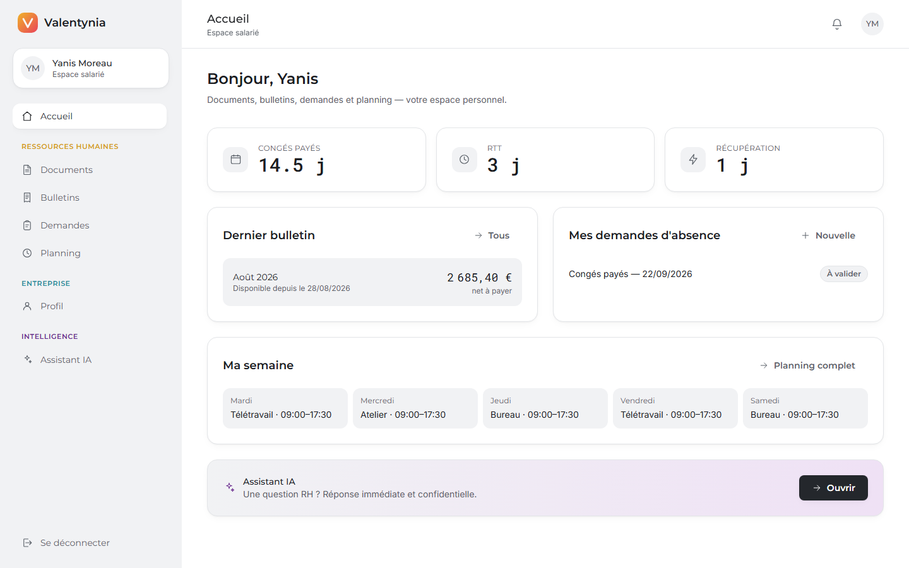

Maquettes — adaptation web et web mobile

Web (poste de travail)

Web mobile (390 px)
Même application, même code : adaptation par CSS responsive (Tailwind). Vérifiée sans débordement horizontal sur les 19 écrans applicatifs.
L'humain, simplement.
Plateforme SaaS de gestion RH et de facturation électronique conforme à la réforme 2026 — adaptée web et web mobile.
→ Une seule plateforme, cohérente entre la donnée RH et la donnée financière — expression des besoins formulée par le candidat pendant sa formation.
Dossiers salariés, absences & congés, planning, onboarding / offboarding, documents, entretiens, compétences, portail salarié.
Génération Factur-X (EN 16931), transmission PPF, archivage 10 ans, journal anti-fraude TVA chaîné.
Alertes et échéances, vérification des clauses de contrat, suivi des obligations RH et du registre RGPD.
Assistant conversationnel, génération de documents RH, analyses agrégées et strictement anonymes.
Espace entreprise (12 écrans) · Espace salarié (7 écrans) · 4 rôles : ADMIN, HR, MANAGER, EMPLOYEE · web et web mobile.
Complémentaires, également illustrées : installation et configuration de l'environnement de travail · documentation du déploiement.
Web (poste de travail)
Web mobile (390 px)
Même application, même code : adaptation par CSS responsive (Tailwind). Vérifiée sans débordement horizontal sur les 19 écrans applicatifs.
flowchart TD ACC["Accueil"] --> CNX["Connexion"] CNX -->|entreprise| DASH["Tableau de bord"] CNX -->|salarié| EDASH["Accueil salarié"] DASH --> SAL["Salariés"] & ABS["Absences"] & FAC["Facturation"] & ONB["Onboarding"] EDASH --> EBUL["Bulletins"] & EDEM["Demandes"] & EPRO["Profil"]
Identique en web et en web mobile : seule la barre de navigation change de présentation (barre latérale fixe en web, menu « burger » en web mobile).


flowchart LR B["Navigateur — SPA React
(Netlify) — web & web mobile"] -->|HTTPS · JSON · JWT| A["API REST
Express + Prisma (Render)"] A -->|TLS| D[("PostgreSQL
Neon")] A -.->|simulation| P["Portail Public
de Facturation"]
frontend/ + backend/, déploiement automatique à chaque git pushReact 18TypeScriptVite 5Tailwind CSSReact Router 6TanStack Query 5
SPA réactive, typage fort, design system par classes utilitaires, gestion professionnelle du cache serveur.
JWTbcryptHelmetZodrate-limitAES-256-GCM
Node.jsExpress 4TypeScriptPrisma 5PostgreSQL
Une seule stack JS/TS, ORM à requêtes typées et paramétrées, migrations versionnées, SGBD relationnel.
ESLintVitestSupertestNetlifyRenderNeon
erDiagram
Company ||--o{ Employee : regroupe
Company ||--o{ Invoice : émet
Company ||--o{ VatJournalEntry : consigne
User ||--o| Employee : "rattaché à"
Employee ||--o{ Absence : pose
Employee ||--o{ Payslip : reçoit
Employee ||--o{ EmployeeSkill : "évalué sur"
Skill ||--o{ EmployeeSkill : "mesurée par"
Invoice ||--o{ InvoiceLine : détaille
Invoice ||--o{ PpfEvent : trace
companyId) · suppressions en cascadeDecimal(12,2) · statuts en énumérations · auto-relation manager / équipefetch typé (JWT, erreurs)useQuery / useMutation + invalidation ciblée du cache| Risque | Réponse |
|---|---|
| A01 Contrôle d'accès | Middleware JWT + rôles · cloisonnement multi-entreprise · périmètre « soi-même » pour les salariés |
| A02 Cryptographie | bcrypt (coût 12) · AES-256-GCM au repos (IBAN, n° SS) · TLS |
| A03 Injection | Requêtes Prisma paramétrées · validation Zod du corps et des paramètres |
| A05 Configuration | Helmet · CORS restreint · secrets en variables d'env · erreurs génériques en prod |
| A07 Authentification | Limitation de débit anti-force-brute · JWT signé et daté |
Facture Factur-X : formulaire → XML → PPF → journal TVA (front + back + sécurité).
| Entrée | Attendu | Obtenu |
|---|---|---|
| 1 ligne, 1000 € HT, TVA 20 % | TTC 1200,00 € | 1200,00 € |
| 2 lignes, TVA 20 % et 10 % | TTC 294,99 € (arrondi) | 294,99 € |
| Compte salarié → créer une facture | 403 | 403 |
| Vérification du journal TVA après création | { ok: true } | { ok: true } |
Aucun écart constaté. Couverture complémentaire : 23 tests automatisés (Vitest + Supertest), 100 % au vert, sur une branche PostgreSQL dédiée.
Trouvée et corrigée pendant le projet : après déploiement, une clé de chiffrement différente entre les environnements faisait échouer le déchiffrement d'un IBAN — l'exception non rattrapée faisait planter la réponse entière (risque de disponibilité).
Correction : déchiffrement rendu tolérant
(tryDecrypt, renvoie null au lieu de propager l'exception) + alignement
strict des secrets entre environnements.
Veille continue : OWASP Top 10 & Cheat Sheet Series,
npm audit, recommandations ANSSI/CNIL sur le chiffrement des données RH.
/api/health)prisma migrate deploy)npm startChaque git push sur main reconstruit et redéploie l'API et le frontend. La vérification de types et le bundle échouent le déploiement en cas d'erreur.
Procédure complète : DEPLOYMENT.md + render.yaml.
npm ci --include=dev.Field corrigé.useEffect renvoyant une valeur → crash sous StrictMode → corps de bloc explicite.Application full-stack fonctionnelle et déployée, utilisable en web et en web mobile, couvrant RH + facturation 2026 + conformité + IA. Toutes les compétences du référentiel mises en œuvre.
Le passage d'une démonstration front-end isolée à une intégration complète avec l'API, et la gestion des secrets entre environnements, ont demandé le plus de rigueur.
Merci — questions ?